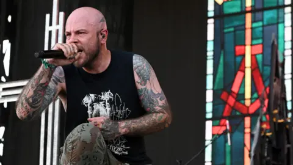

Demon Hunter Sues Netflix Over ‘KPop Demon Hunters’ Branding, Alleging Trademark Confusion
Entertainment | Legal
Published: Wednesday, August 26, 2026

A legal dispute is brewing between a longtime Christian metal band and one of the world’s biggest streaming companies over the name of Netflix’s blockbuster animated film “KPop Demon Hunters.”
Demon Hunter, the Christian metal group that has operated under the name since 2000, has filed a federal lawsuit against Netflix, Netflix Studios and concert promoter AEG Presents. The band’s corporate entity, Hyde Lane Inc., alleges that Netflix’s rapidly expanding franchise has crossed into areas of music, merchandise and live entertainment that overlap with the band’s established business.

Demon Hunter, the Christian metal band that has performed under the name since 2000.
The lawsuit, filed Aug. 18 in the U.S. District Court for the Central District of California, accuses the defendants of trademark infringement, false designation of origin and unfair competition.
At the center of the dispute is Netflix’s decision to expand “KPop Demon Hunters” beyond its animated film into a broader entertainment franchise, including music releases, merchandise and a planned live concert tour.
Band Says Netflix’s Success Is Threatening Its Identity
Demon Hunter argues that it spent more than two decades building recognition around its name before Netflix introduced its similarly named franchise.
The band says the problem became significantly more serious as “KPop Demon Hunters” grew from an animated movie into a global commercial brand. According to the complaint, Netflix’s use of the name increasingly overlaps with the types of products and services Demon Hunter has offered for years.
The lawsuit argues that consumers could reasonably believe the band has some connection to Netflix’s franchise, or that the two entities are affiliated.
The band points to several incidents it says demonstrate that the alleged confusion is not merely theoretical.
In one example cited in the complaint, a parent reportedly purchased nearly $500 worth of tickets to a Demon Hunter concert in Albany, New York, believing the tickets were for a “KPop Demon Hunters” event. The parent later contacted the band seeking a refund after realizing the mistake.
The lawsuit also describes an incident involving a television producer who allegedly contacted Demon Hunter seeking an interview with a songwriter associated with the Netflix production.
According to the band, those incidents illustrate the potential for its decades-old identity to become increasingly difficult for consumers to distinguish from Netflix’s newer franchise.
The Concert Tour Became a Major Flashpoint
The planned “KPop Demon Hunters” concert tour appears to be one of the biggest factors behind the lawsuit.
Netflix has partnered with AEG Presents on a worldwide live tour based on the animated franchise, with the tour expected to launch in 2027.
Demon Hunter argues that moving the franchise into live music creates a particularly direct conflict because touring and performing music have been central to the band’s business since its formation.
The complaint reportedly compares Netflix’s naming strategy to the hypothetical use of a major established band’s name for a competing music act, arguing that the addition of “KPop” does not sufficiently distinguish “KPop Demon Hunters” from the preexisting Demon Hunter trademark.
The band maintains that Netflix’s enormous reach could overwhelm the recognition it has spent years establishing.
Netflix Rejects the Allegations
Netflix has strongly disputed the band’s claims.
In a statement, the company described the allegations as meritless and said it intends to defend itself in court.
Netflix has characterized “KPop Demon Hunters” as a major global entertainment phenomenon driven by its music, characters and story. The company also points to the franchise’s extraordinary popularity as evidence of its cultural impact.
According to Netflix, the movie has accumulated more than 600 million views since its June 2025 debut, making it the company’s most-watched original title.
Its soundtrack has also become a major success, reportedly generating more than 15 billion streams worldwide. The film additionally became the only title to spend 52 consecutive weeks in Netflix’s Global Top 10, according to figures cited by the company.
Those numbers have transformed “KPop Demon Hunters” from a streaming release into a valuable multimedia property.
The film also won the Academy Award for Best Animated Feature, further increasing its profile.
What Demon Hunter Wants From the Court
The band is asking the court to intervene and restrict Netflix and its partners from using the “KPop Demon Hunters” name in connection with music, merchandise and live entertainment.
The complaint seeks injunctive relief that could require the defendants to stop allegedly infringing uses of the disputed branding. The band is also seeking damages, legal expenses and other relief.
Among the remedies described in the lawsuit is a request for the destruction of allegedly infringing materials held by Netflix or Netflix Studios.
A jury trial has also been requested.
The case does not mean that the court has determined Netflix violated trademark law. The allegations remain claims made by the band, and Netflix has denied wrongdoing.
A Collision Between Two Very Different Entertainment Brands
The dispute highlights a complicated issue in modern entertainment: what happens when a fictional franchise expands into commercial territory already occupied by a real-world company or performer?
Demon Hunter is a relatively established music act with a history stretching back more than 25 years. The group has released multiple albums, toured extensively and developed a dedicated following in the Christian metal community.
The Netflix franchise, meanwhile, has achieved enormous mainstream recognition in a comparatively short period.
That disparity in scale is central to the band’s argument. Demon Hunter claims Netflix’s global marketing power and the success of its film could effectively dominate search results, merchandise searches, ticket sales and public recognition associated with the words “Demon Hunter.”
The band’s concern is not limited to the movie itself. Its lawsuit emphasizes the combination of entertainment products surrounding the franchise, including recorded music, merchandise and live events.
Sequel Plans Add Another Layer to the Dispute
The lawsuit comes as Netflix continues developing the future of the “KPop Demon Hunters” franchise.
Netflix announced a sequel in March, with directors Maggie Kang and Chris Appelhans expected to return.
Kang has previously indicated that the first film represents only the beginning of the fictional universe, suggesting that Netflix’s investment in the property could continue expanding.
That expansion could make the trademark dispute increasingly important. If the franchise continues growing through additional films, albums, merchandise, touring productions and other commercial ventures, the overlap alleged by Demon Hunter could become a larger issue.
At the same time, any court order restricting Netflix’s use of the name could potentially affect future franchise plans.
Demon Hunter Continues Its Own Touring Plans
The lawsuit also comes at a significant moment for the band itself.
Demon Hunter has its own U.S. tour scheduled to begin in October, with the group’s next tour set to start in Louisville, Kentucky, on Oct. 7.
That schedule places the band’s live business directly alongside the growing visibility of the Netflix franchise.
For Demon Hunter, protecting its name is therefore not simply a matter of historical recognition. The band argues that the trademark has commercial value tied to its concerts, music and merchandise.
The court will ultimately have to determine whether Netflix’s use of “KPop Demon Hunters” creates legally actionable confusion with the band’s “Demon Hunter” trademark and whether the similarities are sufficient to warrant the remedies being requested.
For now, Netflix remains committed to defending the franchise, while Demon Hunter is asking a federal court to prevent the streaming giant and its partners from using the disputed branding across music and live entertainment.
The case is expected to move through the federal court system as both sides present evidence concerning the history of the Demon Hunter name, Netflix’s use of the “KPop Demon Hunters” branding and the alleged instances of consumer confusion.
More from DJWEIRDNASTY News:
Entertainment News •
Michael Wright, 'The Five Heartbeats' Star, Dies at 70 •
Fast Forever Set to Arrive in 2028 •
All News